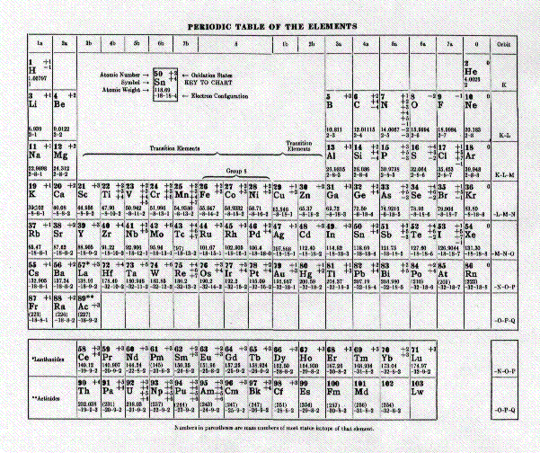

| Action & Reaction - April 2000 |
Date: Sat, 11 Mar 2000 14:03:38 -0000 From: "Katlin" I am an agnostic evolutionist looking forward to a debate on the validity of the points you raised in the human evolution section which you contributed to the "Science Against Evolution" website. I understand you authored six feature articles concerning this subject. If you are interested in this offer, please e-mail back. Cordially, Katlin |
We replied by saying, "If you feel anything we said was incomplete, inaccurate, or unclear, we would like to know about it and set it straight." Here is his response.
Subject: Human Evolution Date: Mon, 13 Mar 2000 15:25:15 -0000 From: "Katlin" ---Okay, let's start on your "Human Evolution" page, first one in series. You write in regard to the Tattersall quote: "Wow! It is one thing to say that the evolutionary fable was once convincing, but now new evidence has shown it to be wrong. But he says it wasn't even convincing in the first place, despite the fact that it was taught as undeniable fact at the time." Let me point out that Tattersall was referring to only one model of human evolution, the single-species hypothesis, advanced by C. Loring Brace and championed by Milford Wolpoff in the 1950s and 1960s. Therefore, this does not spell the end of the so-called "evolutionary fable", as you imply. Your third quote does nothing to disprove human evolution. The Scientific American article was simply pointing out that the unilinear model of human evolution was in error. During those times, most paleoanthropologists (like modern-day creationists) were lumpers, although creationists are super-super-lumpers. They tended to view almost everything as intra-specific variation, hence the neat progression from Australopithecus africanus to Homo erectus to Homo sapiens. Oh, and let's not forget that Homo habilis, Australopithecus afarensis, Paranthropus aethiopicus, Paranthropus boisei and a myriad of others had either not been named or not been discovered. Certainly the recent discovery of Australopithecus gahri and Australopithecus bahrelghazali have muddied a precise account of human evolution. Paleoanthropologists would get a sense of which kind of creature begat another creature, but the specifics, at least for now, are not clear. Let me point out that one of the reasons why Tattersall saw so much room for question marks was his splitter attitude. For example, some paleoanthropologists advocate collapsing Homo rudolfensis into Homo habilis, Homo ergaster into Homo erectus, Paranthropus boisei into Paranthropus robustus, and the genus Paranthropus into Australopithecus. This way, the human evolutionary picture would be decidedly much simpler. You also write: "Tattersall thinks H. erectus was an evolutionary dead end. Uconn says he was our immediate ancestor. There are several other differences which we won't take the time to point out." This is actually a mistake on your part, probably from a not-so-complete understanding of the current discussions over classification. Please note that UConn did not include Homo rudolfensis or Homo ergaster. What does this mean? They're assuming a more lumper point of view by collapsing Homo ergaster and Homo rudolfensis into Homo erectus and Homo habilis, respectively. Therefore, both Tattersall and UConn are, in essence, talking about the same species. Will respond to second Feature Article in next message. Katlin |
Katlin used some jargon that some of our readers might not be familiar with. "Lumpers" and "splitters" refer to how some people classify fossils. Some people like to lump similar fossils together into a single category. Others like to split fossils into several different categories if they feel there are sufficient differences to warrant it.
Katlin is admitting that classification of hominid fossils is entirely subjective. In other words, it is a matter of opinion. It is basically philosophical. A debate over whether it is more useful to group as many fossils as possible into a single category than to create as many different categories as possible might be won by whichever side happened to have the best debater. Or, it might be won by the side that presented the view favored by the judges before the debate began. Since there is no definitive way to determine what is right or wrong, the outcome is uncertain and continually changing.
Not all classification schemes are subjective. Consider the Periodic Table of the Elements that you learned in your high school chemistry class.
Here is the one that is on the inside back cover of my well-worn copy of the Chemical Rubber Company Handbook of Chemistry and Physics, 48th edition, 1967-1968.

The only difference from modern tables is that it peters out at element 103. Modern tables contain a few more unstable elements that have to be produced in a laboratory, and barely last long enough to detect or measure. Except for the addition of newly discovered elements, it has not changed since Dimitri Mendeleyev conceived it in 1869. Chemists don't argue about where to put newly discovered elements in it. That is because the Periodic Table is objective, rational, and scientific. It isn't driven by the prevailing whim.
On the other hand, the biological classification system is constantly being revised. That's because it is subjective. It is governed by opinion, ego, emotion, pride, and nationalism. There are always arguments about how species should be classified.
|
The system (and we are being charitable to call it a "system") used to classify fossils is even more subjective. Katlin points out that the discovery of Australopithecus garhi has "muddied" it. Here is a side view of garhi. (The front view was on the cover of Time last August, which we showed in our January newsletter.) If these few bone fragments, and a lot of blue plastic reflecting the imagination of the craftsman, can seriously affect the recently accepted view of human evolution, then you must realize how tentative the view of human evolution is. Clearly it is as unsupported as "the single-species hypothesis, advanced by C. Loring Brace and championed by Milford Wolpoff in the 1950s and 1960s" which was taught as fact at the time. |
|
Perhaps you have noticed the evolutionists tend to speak out of both sides of their mouths. They justify the teaching their beliefs in public schools by saying that it "is a fact." But as soon as any facet of their belief is no longer accepted by the scientists who happen to be in control at the moment, it was merely one tentative, inconsequential model that was never really accepted at the time.
The theory of evolution is a moving target. Whenever we hit it, people like Katlin criticize us for attacking something that they don't believe any more. Katlin says that we haven't disproved the fact of evolution by pointing out differences in expert opinions about evolution, or by showing that their opinions have changed over time. But we aren't trying to disprove the facts that were taught 30 years ago. We are just trying to show that the "facts" aren't really facts. They are just fickle opinions.
We do, however, admit that we might not understand what the professors at UConn believe. We can't comment on what they believe. We can only comment on what they publish on their web page. On their web page they published a different opinion from what Tattersall has published.
| Quick links to | |||
|---|---|---|---|
| Science Against Evolution Home Page |
Back issues of Disclosure (our newsletter) |
Web Site of the Month |
Topical Index |